Continuous Assessment Plan
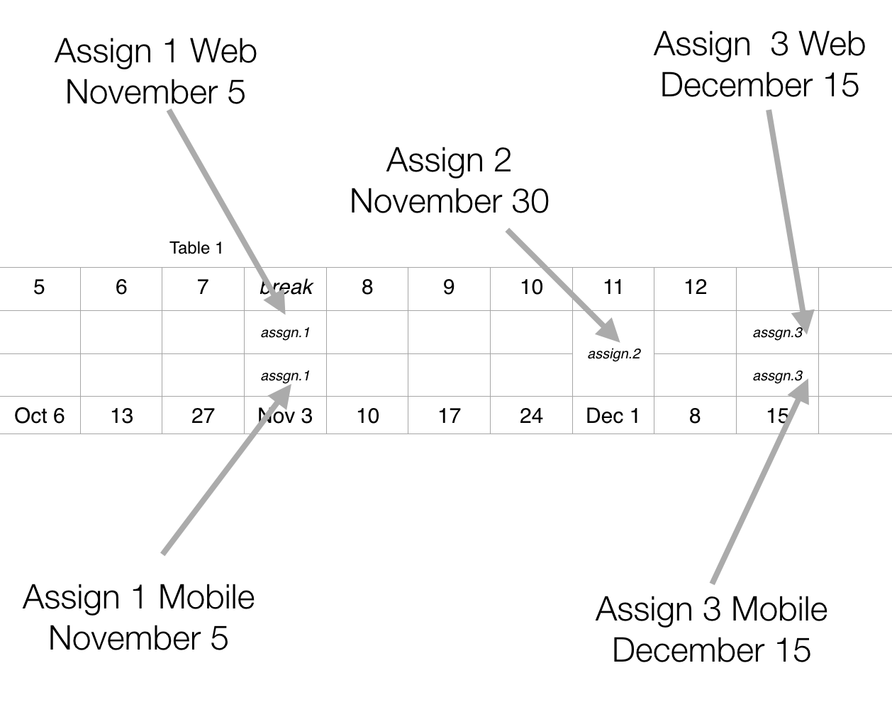
The Calendar for the three assessments in this module
Assignment 1
The specification for Assignment 1
Assignment 2
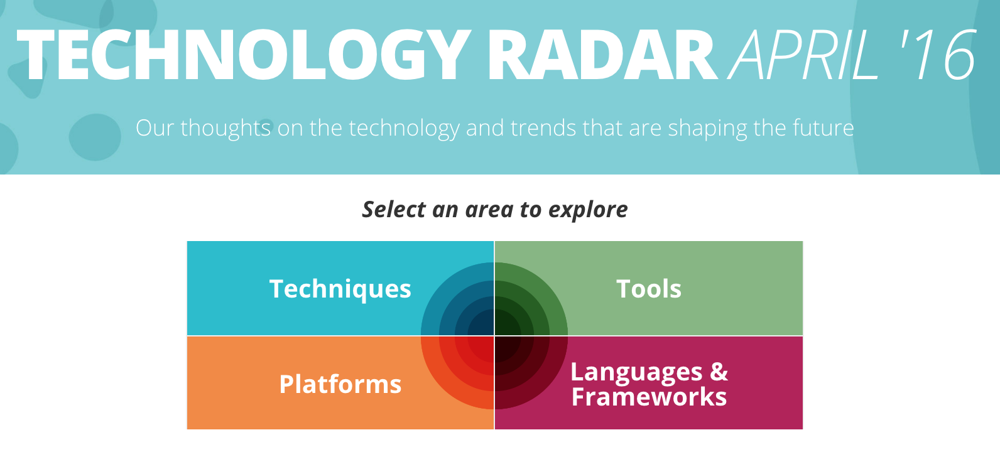
The specification for assignment 2
Assignment 3
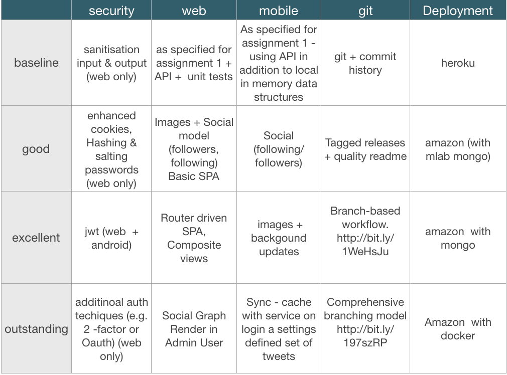
The specification for Assignment 3 + summary of grading approach
error: missing pdf
Case Study

A review of the the evolution of a web site from simple unstyled pages to a reasonable simple but appealing layout.
Deployment

Deploying a site involves understanding a little more about Clients & Servers, Hosting Providers, Domain Names, Transferring the Sites Files, HTTP and Absolute & Relative Paths
Harp & Surge

Harp.js and Surge.sh are the two services we will use to server the page locally, and also to deploy it to a public web server.
Templates

The EJS template system implements mechanisms for assembling sites from templates - which are called 'partials' in EJS. Additionally, there is a complimentary 'layout' mechanism for reusing entire page structures.
Semantic-UI: Containers & Segments

An overview of the container and segments styles in the framework
Semantic-UI II: Grids & Images

An exploration of the Grid and Image styles.
Semantic-UI III: Tables
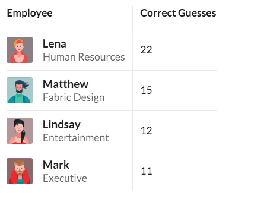
An exploration of the Tables
Semantic Part IV: Responsive

Our final tour of the Semantic-UI library - with a focus on icons, variations in segments and responsive grids
CSS Preprocessors: Sass & Less
Introduction to the the role of CSS Preprocessors and build tools
Semantic Part IV

Our final tour of the Semantic-UI library - with a focus on icons, variations in segments and responsive grids
JS Introduction

JavaScript, an introduction to the language of the web.
JS Basics

Continuing introduction to the language including the topics of identifiers, operators and contol flow techniques.
Arrays, Objects & Functions

JS Browser Tools

Simple JavaScript client-side applications. Introducing Chrome Developer tools.
DOM

The DOM: Javascript manipulates the contents of the web page through a standard abstraction called the Document Object Model (DOM), hence the reason for this brief introduction.
JQuery

jQuery: although not as popular as it once may have been, rumours of its death have likely been greatly exaggerated. Undoubtedly losing ground to modern frameworks. it will still probably be in widespread use for quite some time yet.
Ajax Introduction

Concluding our introduction to JavaScript with a brief discussion about Ajax.
APIs in Ajax
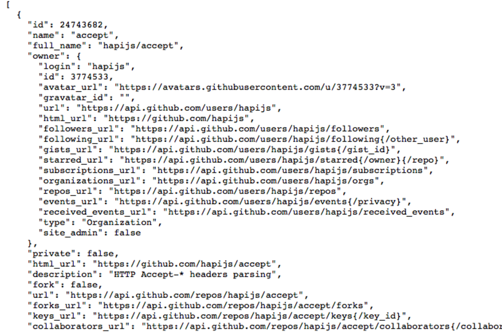
APIs in Node

Review the FoureSquare api and the venues end point. Show how the browser, a dedicated rest tool and a node programme can access this API
Node Essence

What is node? What is its role in modern development? We look at some key characteristics of the platform
Node Context

A look at the components of node, its versioning systems, and key advantages
Programming Node

Examine how node is programmed. Explore callback styles, modules and node program structure.
Continuous Assessment Plan

The CA plans for Enterprise Web Development and Mobile Application Development
Hapi Building Blocks
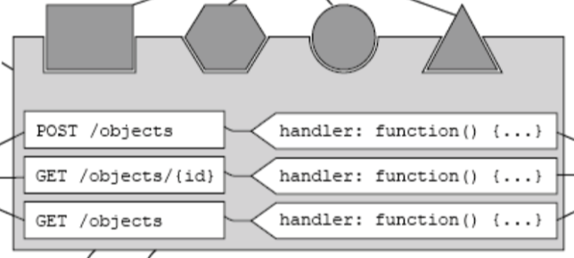
Enumerate the core building blocks of hapi and explain how these are assembled into a simple application.
Static Views
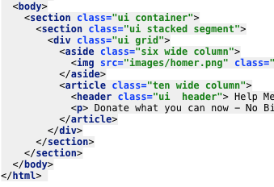
Explore how to server simple views using the Hapi Inert plugin
Templates
Extend the static view with more dynamic capabilities with the vision plugin and the handlebars templating engine.
Lab 06 Exercises
A review of the exercises in the last lab + a tour of the freecodecamp javascript lesson plan
HAPI Philosophy
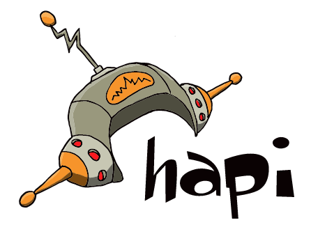
Introduce Hapi, positioning it within the spectrum for Node Frameworks. Identify Hapis' unique features.
Sessions

Keeping track of the currently logged in user is a challenge - as HTTP is, by definition 'stateless'. Hidden form fields, url rewriting and cookies are three common techniques for implementing sessions.
Sessions in Hapi
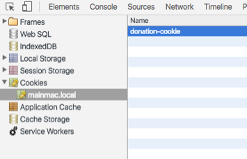
The hapi-auth-cookie provides cookie management for Hapi applications, facilitating creating, read and delete of secure browser based cookies.
JS Arrays

Brief discussion on arrays and global variables.
Promises in Javascript
A short introduction to Promises, a new feature is ES6, to simplify asynchronous programmming.
Introducing NoSql DBs

A review of the NoSQL movement and some of its key characteristics
Setting Up Mongo
Installing, connecting to and initialising Mongoose/MOngo db from a node application.
Accessing Mongo

Creating and using Objects in Mongo, using its promise based API
JS Functions
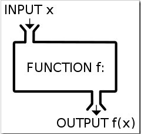
Exploring some of the expressive features of the language, such as functions as first class objects. Brief encounter with some of the newly introduced functionaliy as part of ECMAScript 2015 (ES6).
Joi Validation

Joi is a node validation module providing general purpose schema based validation.
Hapi Validation with Joi
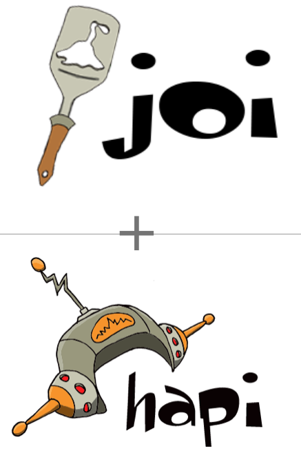
Hapi & Joi can work together to deliver easy to configure declarative validation for handlers.
JS Scope

Examining closure and scope
Callbacks & Promises

Callbacks are gradually being replaced with Promises in some modules and components. We review callbacks again here and look at how promises approach the same tasks.
Node on Heroku
Heroku is a PaaS, supporting node and a variety of other application types. We review here the steps involved in deploying a node app.
Relationships between Mongo Documents
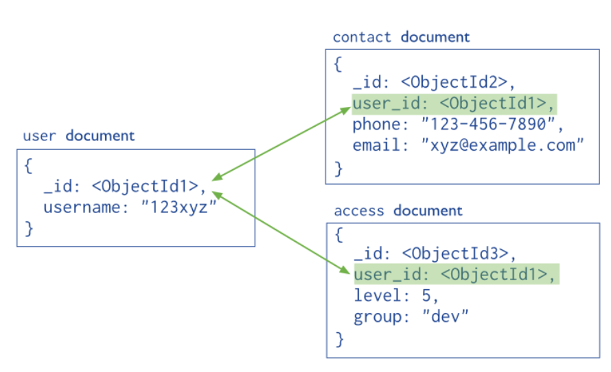
Creating and maintaining relatopnships between mongo documents enable powerful models to be constructed and queried.
Mongoose Seeding
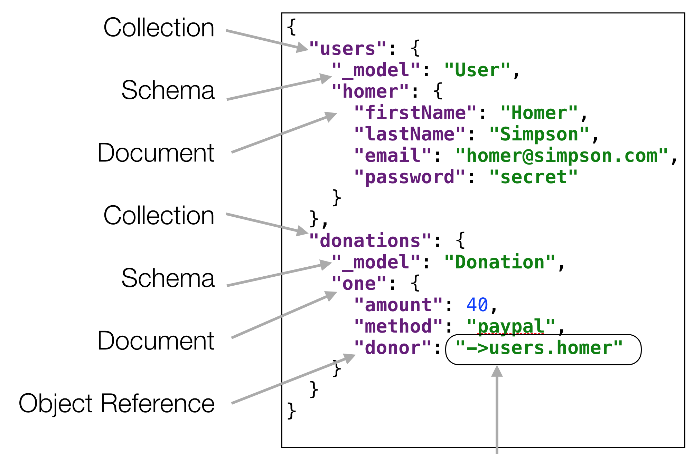
Seeding the database can simplify exploratory development, prepopulating the database with simple test data during development.
Candidate Model
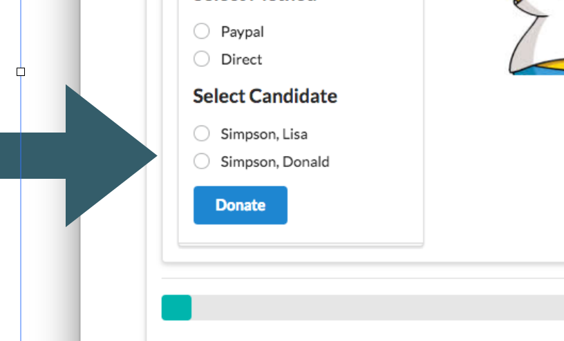
Users should be able to donate to different candidates. We extend the model to include Candidates, incorporating candidate references into donations.